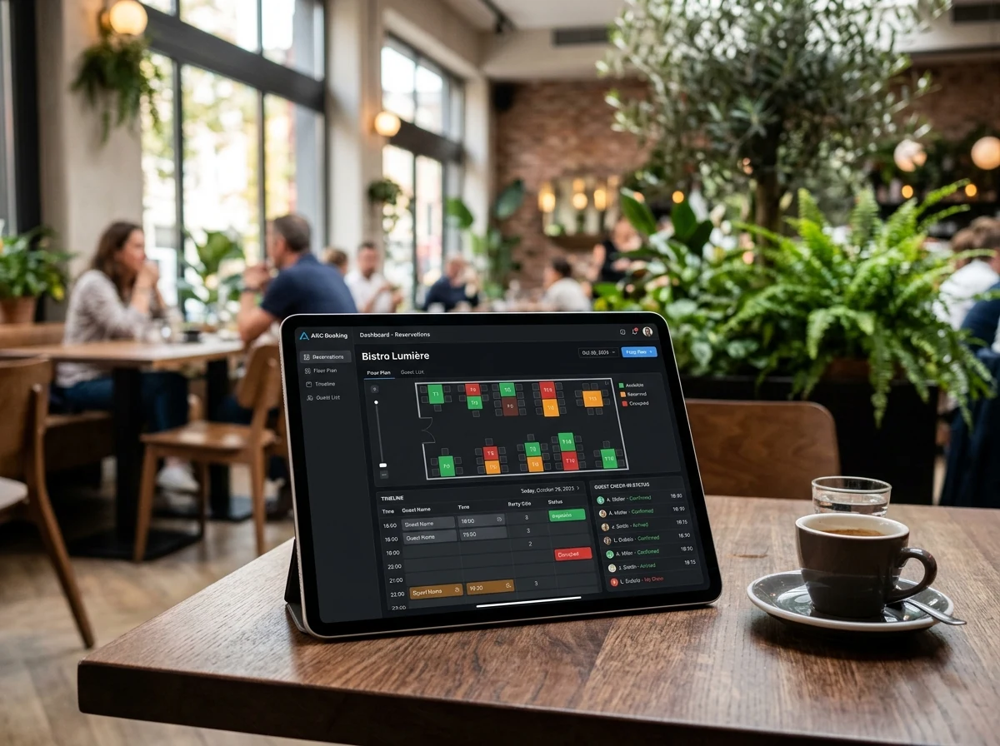
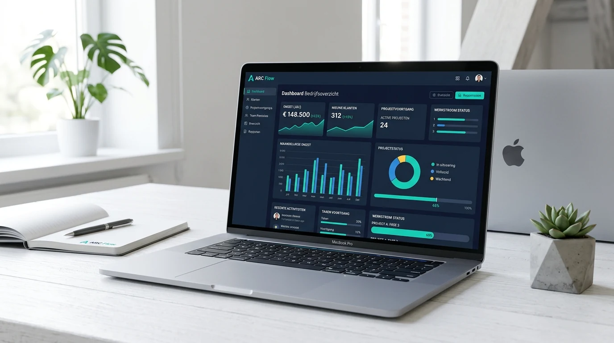
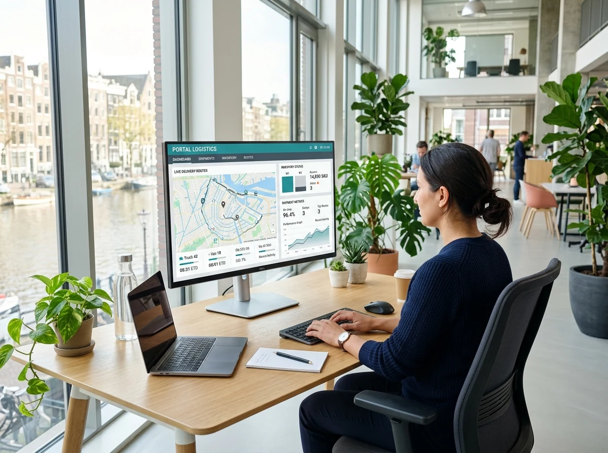
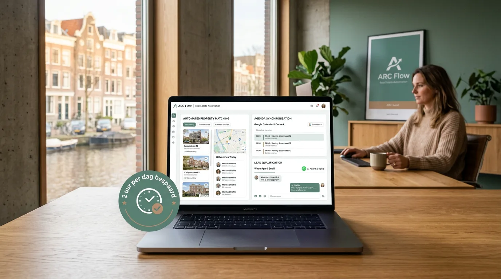
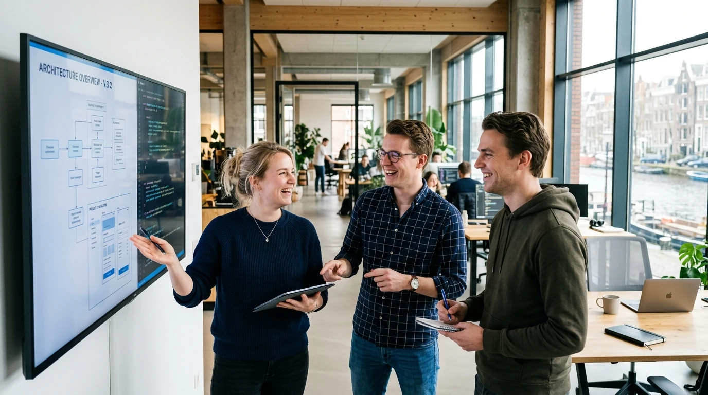
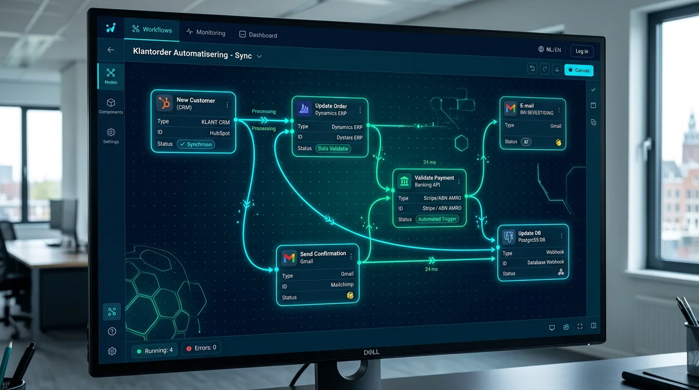
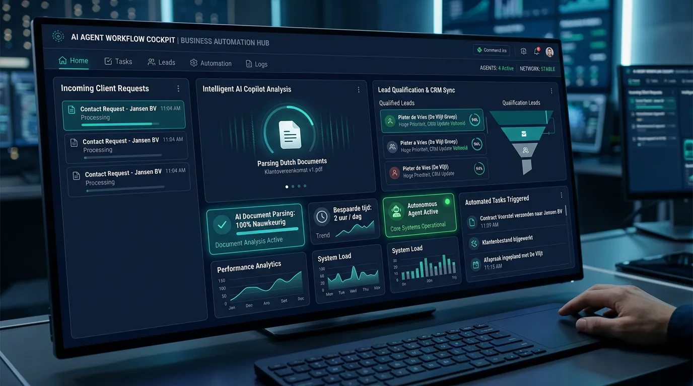
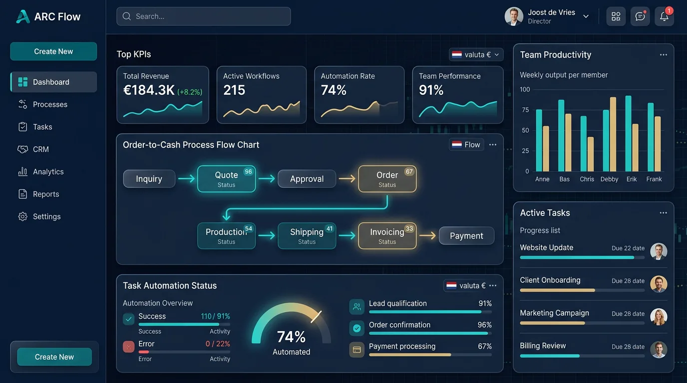

STOP HET HANDWERK.
BOUW DE FLOW.
Geen logge software of handmatige Excel-lijsten. Wij koppelen je bestaande tools, bouwen wat ontbreekt en zetten slimme AI-agents in. Direct gerealiseerd door 3 senior makers.
Echte software. Echte resultaten.
Van maatwerk SaaS tot live ERP- en boekhoudkoppelingen.








In 4 stappen van chaos naar flow
Het Dieptegesprek
Direct met de 3 makers, knelpunten blootleggen
Architectuur & Vaste Prijs
Heldere scope vooraf, nooit nacalculatie
Agile Bouw & AI Integratie
Wekelijkse previews van geteste software
Oplevering & 100% Eigendom
Alle code en data is van jou. Geen lock-in
Knelpunten & Urenverlies Inventariseren
We duiken direct in jullie dagelijkse werkprocessen. Welke data wordt handmatig overgetikt? We berekenen direct wat automatisering oplevert in uren en euro's per maand.
Technisch Ontwerp & Vaste Investering
Geen open eindes of uurtje-factuurtje. Je ontvangt een interactief ontwerp waarin elk scherm en koppelvlak staat uitgetekend, inclusief een harde all-in projectprijs en gegarandeerde opleverdatum.
Agile Bouw, Integraties & AI-Agenten
De 3 makers gaan direct aan de slag. We koppelen de API's, richten de AI-agenten in voor documentparsing en bouwen de interfaces. Je test wekelijks mee in een live staging omgeving.
Oplevering, Eigendom & Onderhoud
Het systeem gaat live. Alle broncode, databases en AI-modellen worden 100% eigendom van jouw bedrijf. Geen vendor lock-in. Wij blijven beschikbaar voor actieve monitoring en opschaling.
Drie pijlers voor een digitaal schaalbaar bedrijf.
Geen standaardpakketten waar je bedrijf zich aan moet aanpassen. Wij bouwen software die exact aansluit op jouw manier van werken.
Klantportalen, SaaS & Bedrijfssoftware
Van intuïtieve klantportalen tot complete ERP-systemen en ons eigen horeca-reserveringsplatform ARC Booking. Volledig afgestemd op jouw processen, razendsnel en 100% jouw eigendom.
API-Koppelingen & Webhooks
Koppel Exact Online, AFAS, HubSpot en Mollie naadloos aan elkaar. Nooit meer dubbel overtypen of menselijke fouten in offertes en orders.
Document Parsing & Taakagenten
Laat AI inkomende offertes, facturen en klantvragen automatisch begrijpen, categoriseren en direct doorzetten naar de juiste administratie.
"Van 2 uur administratief ploeteren naar 100% automatische dossiers."
Voor WoonWens Makelaar bouwde ARC Flow een slimme AI-pipeline die bezichtigingsaanvragen, woningdossiers en klantgegevens automatisch matched en verwerkt. Resultaat: 2 uur per dag bespaard en véél snellere reactietijden.
Wat MKB-ondernemers over ARC Flow zeggen.
"Dankzij de AI-workflows van ARC Flow besparen we ruim 2 uur handwerk per dag. Facturen, bezichtigingen en dossiers stromen automatisch door, waardoor we écht tijd hebben voor onze klanten."
"ARC Flow bouwde een razendsnel journalistiek platform dat duizenden bezoekers gelijktijdig verwerkt zonder vertraging of vastlopende plugins. Stabiel, veilig en schaalbaar."
"Geen hoge commissiekosten meer aan externe reserveringssites. Het ARC Booking platform regelt onze tafels, betalingen en no-shows automatisch in een strakke interface."
"Exact Online, Mollie en ons ERP communiceren nu naadloos met elkaar. Onze medewerkers hoeven orders niet meer dubbel in te voeren. Dat scheelt wekelijks een volle dag werk."
Geen accountmanagers. Direct contact met de bouwers.
Amber
Lead Backend & Systems ArchitectVerantwoordelijk voor schaalbare databases, robuuste API-koppelingen, microservices en veilige data-architectuur.
Revie
AI Solutions & Automation EngineerBouwt intelligente LLM-pipelines, autonome agenten en proces-automatiseringen die direct tijdwinst opleveren.
Cees
Lead Product Designer & FrontendOntwerpt intuïtieve gebruikerservaringen, snelle webinterfaces en dashboards zonder logge templates.
Bereken je MKB-besparing.
Ontdek wat het elimineren van repeterend overtypwerk jouw team jaarlijks aan tijd en geld oplevert.
Alles wat je vooraf wilt weten.
Kom een keer praten
Geen accountmanager. Je zit direct om tafel met Amber, Revie of Cees.
Bericht ontvangen!
We reageren binnen 1 werkdag om samen te sparren over jouw situatie.